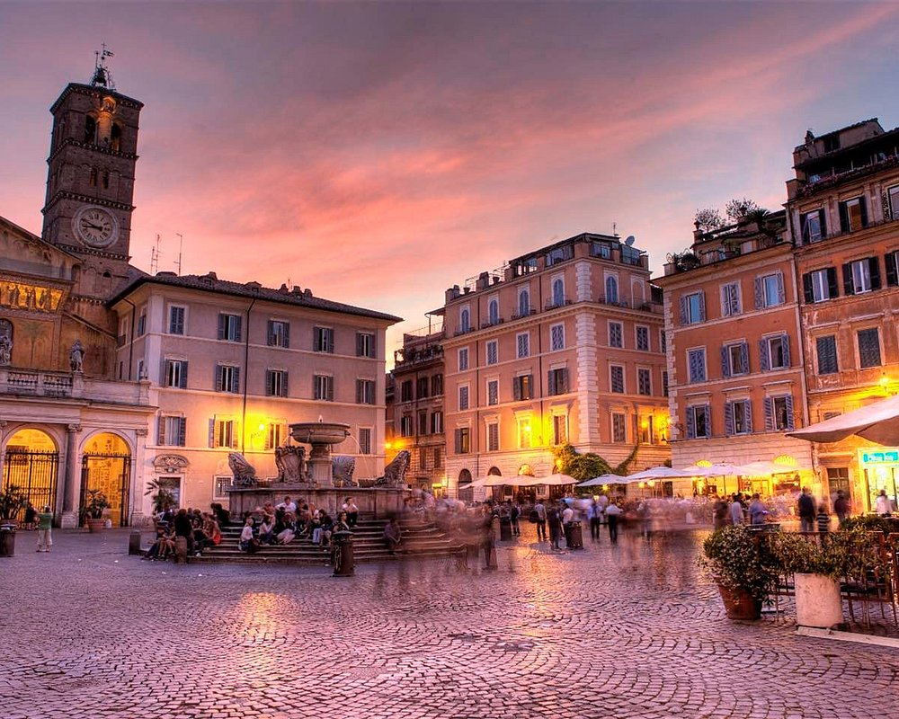
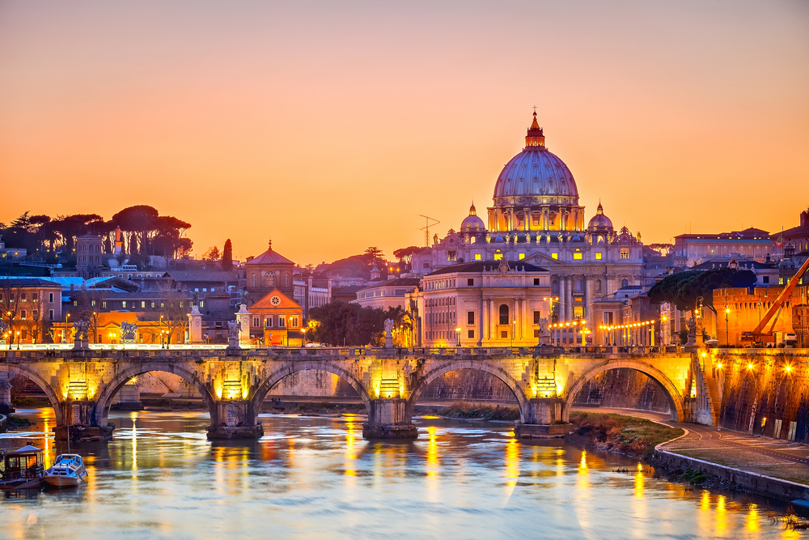
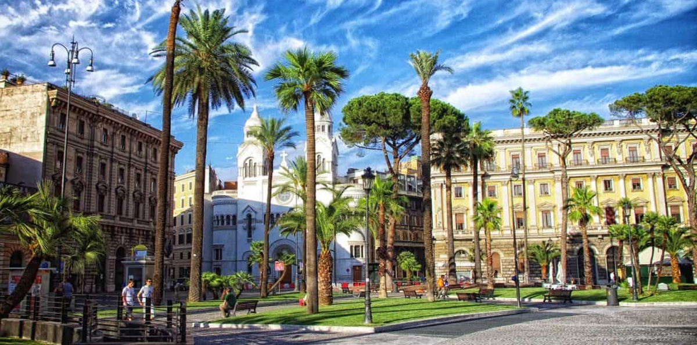
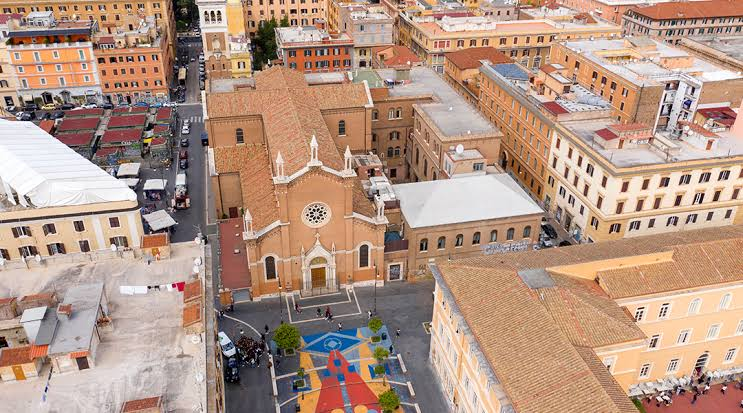

Trastévere

El Trastevere es famoso en Roma por su ambiente bohemio y tradicional, sus estrechas calles adoquinadas de origen medieval y su animada oferta gastronómica y nocturna.

Roma es la capital de Italia y una de las ciudades más antiguas e importantes del mundo. Está ubicada en el centro del país, a orillas del río Tíber, y es conocida como la Ciudad Eterna por su larga historia. Según la leyenda, fue fundada por Rómulo y Remo en el año 753 a.C. Durante siglos fue el centro del Imperio Romano, cuya influencia todavía se puede observar en sus construcciones y monumentos.
Hoy en día, Roma combina edificios antiguos con construcciones modernas, grandes plazas, fuentes y calles llenas de historia. Se destaca por su arquitectura, su arte y su gastronomía, además de lugares emblemáticos como el Coliseo y la Fontana di Trevi, que atraen a millones de visitantes.

El Trastevere es famoso en Roma por su ambiente bohemio y tradicional, sus estrechas calles adoquinadas de origen medieval y su animada oferta gastronómica y nocturna.

Prati es un elegante barrio residencial y comercial de Roma, ubicado en la orilla derecha del río Tíber y muy cerca de la Ciudad del Vaticano.

San Lorenzo es un barrio vibrante, universitario y alternativo en Roma, ubicado cerca de la estación Termini, la Universidad La Sapienza y el cementerio del Verano.